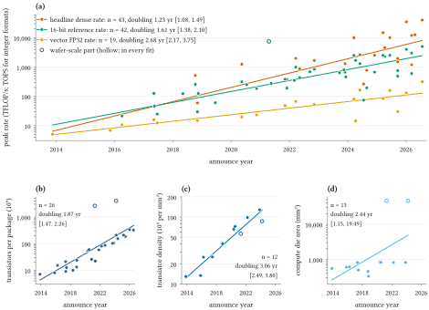
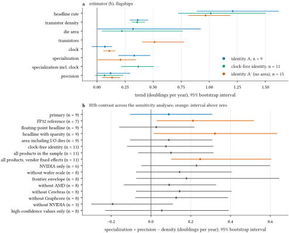
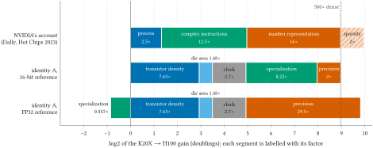
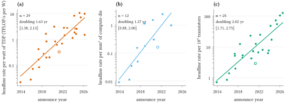
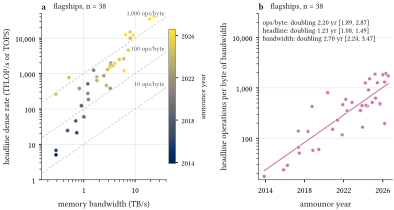
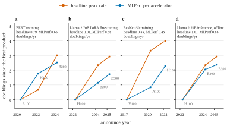

1 Introduction
In 1965 Gordon Moore predicted that the number of components on an integrated circuit would keep doubling every year [1], and in 1975 he forecast that the rate would slow to a doubling every two years [2]. Fifty years later the fastest-growing number in computing is not a transistor count but the peak throughput printed on the datasheets of AI accelerators. NVIDIA’s chief scientist has described a thousand-fold gain in single-chip inference throughput over the decade from Kepler to Hopper [3], and the pattern has been called “Huang’s law” since 2018 [4], [5]. If peak throughput grows much faster than transistor counts, most of the growth must come from somewhere other than the process node, and it matters where. Process gains have been steady for half a century, whereas the alternatives (larger dies, higher clocks, more arithmetic per transistor, narrower number formats) each have a limit that a forecast of AI compute would need to know about.
This paper asks a narrow, checkable version of the question: how much of the growth in the vendor-published peak throughput of data-centre AI accelerators is Moore’s law? We answer it with an accounting identity rather than a model. For every accelerator whose vendor publishes the transistor count, the die area, the clock and the peak rates, the logarithm of the headline peak rate splits exactly into five terms: transistor density, die area, clock, specialization (operations per transistor per cycle at a 16-bit reference precision) and a precision multiplier (the gain from formats narrower than 16-bit). Moore’s law in its scaling sense is the density term.
Our answer is that density supplies about a third of the growth (Figure 2). From K20X to H100, the headline rate rose 501×, or 8.97 doublings in 9.4 years, of which density supplied 2.93 and specialization 3.04. Across vendors, the flagships’ headline rate doubled every 0.83 years and their density every 2.76 years (Figure 1). The precision multiplier, often named as the main driver, moved in single steps rather than along a trend. The decade’s largest architectural gains came from matrix units at 16-bit precision. The result agrees in total with NVIDIA’s own decomposition of the same decade and disagrees with it on where the transistors belong (Section 5.3).
We make three contributions. The first is a dataset of 79 accelerators, each value with a source, an access date and a confidence level, released with the code under open licences. The second is a pre-registered decomposition, reported whatever the outcome; two of the seven hypotheses fail. The third is a quantitative reconciliation with the vendor’s own account, which shows that the two accountings differ in bookkeeping rather than in fact.
2 Background
Moore, Dennard and Koomey. Moore’s 1965 paper projected the number of components per chip at minimum cost [1]. In 1975 he split the growth of chip complexity into larger dies, finer dimensions and a residual of “circuit and device cleverness”, the first decomposition of this kind, and forecast the two-year cadence usually quoted [2]. Dennard and colleagues showed that shrinking a MOSFET’s dimensions and voltage together keeps power density constant [6]; when voltage scaling stalled in the mid-2000s, clock rates stopped rising and the gains from a new node had to be spent on more cores or more specialised logic [7]. Koomey and colleagues measured the efficiency of computing, peak computations per kilowatt-hour, and found that it doubled every 1.57 years from 1946 to 2009 [8]. Nagy and colleagues hindcast 62 technologies and found that an exponential trend in time forecasts nearly as well as Wright’s law, while warning that short, noisy series fit it only loosely [9].
Specialization as the successor to scaling. Leiserson and colleagues argued that after Moore’s law, performance must come from “the Top” of the computing stack, software, algorithms and hardware architecture, and that domain-specific hardware can run applications tens to hundreds of times faster by using fewer transistors [10]. Thompson and colleagues showed that the computation used by deep learning grew far faster than per-chip hardware, mostly by running models longer on more machines [11]. Jouppi and colleagues documented Google’s TPUs, the clearest case of a domain-specific accelerator built for machine learning [12], [13]. Khan and Mann explained for a policy audience why such chips outperform general-purpose processors [14].
Huang’s law and the vendor’s decomposition. IEEE Spectrum named “Huang’s law” in 2018, reporting Jensen Huang’s claim that NVIDIA’s GPUs were 25 times faster than five years earlier, where Moore’s law would have given a factor of 10 [4]; the Wall Street Journal put the term in a headline in 2020 [5]. Dally, Keckler and Kirk reported a 317× gain in GPU inference performance from Kepler in 2012 to Ampere in 2020, “largely due to the addition of DL-specific data types and instructions”, and expected it to slow toward the 35% a year that technology alone provides [15]. Dally’s Hot Chips 2023 keynote extended the chart to H100 and split its thousand-fold gain into number representation, complex instructions, process and sparsity [3], [16]. That decomposition is the vendor account we test in Section 5.3.
Trend studies. Sun and colleagues fitted design trends for more than four thousand CPUs and GPUs from product data and found clock frequency to be the main driver of GPU FLOPS growth, measured at FP32 and base clock [17]. Epoch AI estimated that the FP32 price-performance of GPUs doubles about every 2.5 years [18], and that the FP32 peak of machine learning hardware doubles every 2.3 years and its memory bandwidth every 4 years, with tensor formats giving a further, roughly constant multiple at each precision [19], [20]. Epoch also maintains the hardware database we use as a cross-check [21]. Sevilla and colleagues measured the growth of training compute [22], and Ho and colleagues the algorithmic progress that adds to it [23]; both are demand-side counterparts of the supply side studied here. None of these studies splits a chip’s peak rate into an exact sum of physical and architectural terms with a source for every input, and none reconciles a vendor’s own account.
Memory wall and realized performance. Gholami and colleagues showed that the peak compute of server hardware has outgrown memory and interconnect bandwidth for two decades, at 3.0× every two years against 1.6× for DRAM bandwidth and 1.4× for interconnect bandwidth [24]. Jouppi and colleagues reported that four of the six production workloads on the first TPU were memory-bound [12], and split one TPU generation’s peak gain into more matrix units and a higher clock while memory bandwidth rose much less [13]. MLPerf provides measured training and inference throughput on fixed tasks [25], [26], which we use to check whether realized performance follows the headline peaks.
3 Data
Unit and population. The unit is a product: a distinct silicon configuration sold or deployed as a data-centre machine learning accelerator, announced between 2012 and 2026. Variants of the same silicon that differ in memory, power or form factor are separate rows linked to a primary variant, the highest-TDP module form; only primary variants enter the analyses. The dataset has 79 products from 14 vendors, 66 of them primary. Within each vendor and architecture generation, the flagship is the primary part with the highest headline dense rate among parts positioned for training; there are 44. One card whose rates are given for an unstated number of chips is excluded from every analysis.
Fields. For each product we record the announce and ship dates, process node and foundry, transistor count, compute and total die area, number of compute dies, boost clock, TDP, memory capacity and bandwidth, and every published peak rate: vector FP64, FP32, FP16, BF16 and INT8, and matrix-unit rates from FP64 down to FP4 and INT4, dense and, separately, with structured sparsity. Prices are recorded where a vendor publishes them; none does for the products in the sample, so no per-dollar analysis is possible.
Sources. Every value carries a URL, an access date and a confidence level in data/sources.csv. The order of preference is the vendor’s datasheet, whitepaper or product page, then a vendor-authored paper, then Epoch AI’s hardware database [21] at medium confidence where the vendor is silent. Of the 1,152 source rows, 1,123 are high confidence, 24 medium and 5 low. Where sources disagree, the vendor’s document wins and the alternatives are listed in data/conflicts.md. Where a vendor publishes only a sparse rate and states that dense is half of it, the dense rate is derived and marked as such. A validator rejects any value without a source.
Coverage. The decomposition needs five fields (transistor count, compute die area, clock, TDP and a reference rate), and publication of these has declined. NVIDIA has not published die area or boost clock for Blackwell or Rubin, AMD has not published die area since MI100, and Google publishes neither transistor count nor die area for its TPUs. Only 9 flagships have all five fields; 15 have every field except die area and 11 every field except the clock. We use the last two groups with reduced identities (Section 4). data/coverage.md lists, for every product, the fields it lacks.
4 Method
Definitions. The headline dense rate is the largest dense peak rate over every supported format, INT8 and INT4 included, counting two operations per multiply–accumulate. The reference rate is the dense matrix-unit FP16 or BF16 rate; if the product has no matrix unit, its vector FP16 or BF16 rate; if it has no 16-bit format, its FP32 rate. is the transistor count of the package, the total area of its compute dies, the boost clock (the clock at which vendors state their peak rates, unlike the base clock used by Sun and colleagues [17]) and the TDP.
Identity A. For every product with all five fields, by construction, that is, density + area + clock + specialization + precision. Specialization is reference operations per transistor per cycle: it rises when more of the silicon does 16-bit arithmetic every cycle, and falls when transistors go to caches, I/O or features that do not raise . Sparsity is outside . Two reduced identities cover products with missing fields: identity A′ merges density and area into , for products without a published die area, and the clock-free identity merges the clock into specialization (), for products without a published clock. Identity B splits into and , and identity C into and .
Estimators. Estimator (a) chains NVIDIA’s first flagship of each architecture from K20X (Kepler) onward and reports, for each step and cumulatively, the change in each term’s and its share of the change in . Estimator (b) regresses of each term and of on decimal announce year over the flagships with all five fields; because the identity is additive, the slopes add up to the slope of . Doubling time is the inverse slope. Intervals are percentile intervals from a bootstrap over chips (2,000 draws), with HC3 standard errors and the Theil–Sen slope as checks. Estimator (c) computes identity A from K20X to H100 at the endpoint rates NVIDIA uses (FP32 for K20X, dense FP8 for H100) and compares its physical part, , with NVIDIA’s “process” factor, and its architectural part, specialization × precision, with NVIDIA’s number representation × complex instructions [3].
Pre-registration. The question, the definitions, the sample rule, the estimators, seven hypotheses with their decision rules and the sensitivity analyses were frozen at the git tag prereg-v1 before any value was collected. The thresholds were set after the author had worked the identity through from remembered headline figures, so the pre-registration is not blind. Every later change, including four decisions taken at review gates during data collection, is logged with its date and reason in DEVIATIONS.md; the main ones are described where they matter below.
5 Results
5.1 How fast
Figure 1 shows the ladder. Over all 43 flagships with a headline rate, the headline doubled every 1.23 years (95% CI 1.08–1.49), the 16-bit reference rate every 1.61 years and the vector FP32 rate every 2.68 years, slower than Epoch AI’s 2.3 years for the FP32 peak of machine learning hardware in general [19]. Transistors per package doubled every 1.87 years, close to Moore’s 1975 cadence, and transistor density every 3.06 years. On the 9 flagships with all five fields, the headline doubled every 0.83 years (CI 0.62–1.13), which meets H1. The headline rate has therefore doubled two to three times as fast as density, and the rest of this section asks where the difference comes from.

5.2 Where it comes from
The NVIDIA chain. Figure 2 gives the chain decomposition. From K20X to H100, density contributed 0.327 of the change in , die area 0.063, clock 0.160, specialization 0.339 and precision 0.111. The steps differ in kind. The Kepler-to-Maxwell step came mostly from clock, on the same 28 nm node. Pascal to Volta added tensor cores and raised specialization by 2.05 doublings in one step. Volta to Ampere took the headline to INT4, a precision gain of 2.00 doublings, and Hopper’s headline format, FP8, is one step wider than Ampere’s INT4, so the precision term fell by −1.00 doublings in the last step. Die area barely moved because K20X was already a large die. AMD’s Instinct chain from MI60 to MI355X, with identity A′ because AMD does not publish die area, gives transistors 0.513, clock 0.056, specialization 0.294 and precision 0.137 of its 7.42 doublings.

H2: Moore’s law proper is the minority. Density’s share of the NVIDIA chain, 0.327, is below one third, and its doubling time across flagships, 2.76 years, is above 2.5 years, so H2 is supported. The margin is thin: a change of 4.1% in the transistor count or die area of either endpoint would move the share to one third.
H3: architecture and arithmetic outweigh density. In the chain, specialization and precision together account for 0.450 of the gain against density’s 0.327, so part (a) holds. In the regression (Table 1, Figure 3), the specialization and precision slopes sum to more than the density slope by 0.090 doublings per year, but its 95% interval runs from −0.103 to 0.307. Part (b) fails and H3 is falsified as pre-registered. With nine products, the regression cannot separate the architectural terms from density, even though the chain puts them ahead.
| term | slope (doublings/yr) | 95% CI | doubling time (yr) |
|---|---|---|---|
| headline rate | 1.208 | [0.888, 1.619] | 0.83 |
| density | 0.363 | [0.291, 0.454] | 2.76 |
| area | 0.321 | [0.005, 0.925] | 3.11 |
| clock | 0.071 | [−0.048, 0.134] | 14.08 |
| specialization | 0.332 | [0.192, 0.475] | 3.01 |
| precision | 0.121 | [0.000, 0.295] | 8.27 |

H4: bigger silicon and more watts. After 2020 the chain has a single step that can be decomposed, A100 to H100. On it, TDP grew by 0.81 doublings against a mean of 0.19 on earlier steps, but die area shrank by −0.02 doublings against an earlier mean of 0.15, so H4 is not supported. Area growth after H100 has come from putting two dies in a package, which NVIDIA has not quantified. TDP alone, over the full chain to B300, grew by 0.60 doublings per step after 2020 against 0.19 before. In identity B over the same chain, the power budget accounts for 0.217 of the gain and efficiency for 0.783.
5.3 The vendor’s account
Dally’s chart of “single-chip inference performance” plots peak INT8-equivalent TOPS from K20X to H100, and his slide attributes the gain to number representation (16.0×), complex instructions (12.5×), process (2.5×) and sparsity (2.0×), which multiply to 1,000×, or 500× without sparsity [3]. The H100 point on the chart, like the A100 point [15], is a sparse rate, and the slide adds that model efficiency raised the overall gain further; we compare dense rates and hardware only. Identity A, from K20X’s FP32 rate of 3.95 TFLOP/s to H100’s dense FP8 rate of 1,979 TFLOP/s, gives 501×: the totals agree (Figure 4, Table 2). The split does not. Transistors grew 11.3× and the clock 2.70×, so the physical factor grew 30.5×, 12.2 times NVIDIA’s process factor. This meets H7. Correspondingly, specialization × precision is 16.4×, against NVIDIA’s 200×.
The two accountings differ in bookkeeping. NVIDIA’s “process” is the gain per transistor from a newer node; the extra transistors that the node and a larger die make available are credited to the architecture that uses them. Identity A counts every transistor as a physical input and credits architecture only with what it does per transistor per cycle. Neither is wrong, but they answer different questions: NVIDIA’s says what the design team did with the transistors it was given; ours says how much of the gain would have arrived without any change in what a transistor does. Taking FP32 as the reference for every chip, which is closer to NVIDIA’s “number representation”, moves most of the architectural gain from specialization to precision (29.5× precision and 0.56× specialization) but leaves the physical factor where it was.

| factor | identity A, 16-bit reference | identity A, FP32 reference | NVIDIA (Dally 2023) |
|---|---|---|---|
| headline rate | 3.95 (vector FP32) → 1979 (dense FP8) TFLOP/s | ||
| total (dense) | 501.0× | 501.0× | 500× (1000× with 2× sparsity) |
| density | 7.63× | 7.63× | |
| area | 1.48× | 1.48× | |
| clock | 2.70× | 2.70× | |
| physical: N·f | 30.5× | 30.5× | process 2.5× |
| specialization | 8.22× | 0.56× | complex instructions 12.5× |
| precision multiplier | 2.00× | 29.54× | number representation 16.0× |
| non-physical: spec × precision | 16.4× | 16.4× | 200× |
5.4 Efficiency and memory
Figure 5 shows three efficiency ratios. Headline throughput per watt of TDP doubled every 1.63 years over 29 flagships, the 16-bit reference rate per watt every 2.22 years, throughput per mm² of compute die every 1.27 years and per billion transistors every 2.02 years. Koomey’s efficiency trend for general computing was a doubling every 1.57 years [8]; peak AI throughput per watt has kept a similar pace, mostly through formats and matrix units rather than voltage.

Memory has not kept up (Figure 6). Over 38 flagships, bandwidth doubled every 2.70 years and capacity every 2.61 years, while the headline rate doubled every 1.23 years, so the operations available per byte fetched doubled every 2.20 years (fitted directly to the ratio on the flagships that report bandwidth, so it is not exactly the difference of the two slopes). Flagship bandwidth grew faster than the four-year doubling Epoch AI found for machine learning hardware in general [19], but not as fast as compute. In the pre-registered test on the decomposition sample (n = 7), the headline slope exceeds the bandwidth slope by 0.709 doublings per year (CI 0.395–1.072), so H5 is supported; on all 38 flagships with both, the gap is 0.454 (0.349–0.530).

5.5 Peak against measured
H6 compares the headline trend with MLPerf results, per accelerator, from the first round in which each product appears. Four benchmarks have results for three NVIDIA flagship generations; no other vendor has three. On all four, the measured per-accelerator throughput grew more slowly than the headline rate of the same products (Figure 7): ResNet-50 training 0.45 against 0.85 doublings per year, BERT training 0.65 against 0.79, Llama 2 70B LoRA fine-tuning 0.58 against 1.01, and Llama 2 70B offline inference 0.83 against 1.01. H6 was pre-registered as exploratory. With three products per benchmark, results from systems of different sizes and software of different ages, and the BERT results of the first round excluded because that round’s accuracy target was lower, it is a consistency check and not an estimate of the gap. Software moves these results too: between the first two training rounds, the best 16-chip results improved 1.3× on unchanged hardware [25], so a first-round result understates what the same chip delivers later; Google measured larger compiler-only gains over 20 months on both GPUs and TPUs [27].

5.6 Hypotheses
Table 3 collects the seven decisions.
Table 1. Pre-registered hypotheses, decision rules and outcomes. CIs are 95% bootstrap intervals.
| rule (PREREGISTRATION §5) | estimate | verdict | |
|---|---|---|---|
| H1 | doubling of P ≤ 1.5 yr, CI upper bound < 2.0 yr | 0.83 yr, CI [0.62, 1.13], n = 9 | supported |
| H2 | (a) density doubling ≥ 2.5 yr; (b) density share of the NVIDIA chain < 1/3 | (a) 2.76 yr; (b) 0.327 | supported |
| H3 | (a) chain: spec + precision share > density share; (b) spec + precision − density slope > 0, CI excludes 0 | (a) 0.450 vs 0.327; (b) 0.090 doublings/yr, CI [−0.103, 0.307] | falsified ((a) passes, (b) fails) |
| H4 | NVIDIA chain: area and TDP grow more per step after 2020 | area −0.02 vs 0.15; TDP 0.81 vs 0.19 (1 late step) | not supported |
| H5 | slope of P − slope of bandwidth > 0, CI excludes 0 | 0.709 doublings/yr, CI [0.395, 1.072], n = 7 | supported |
| H6 | MLPerf slope < headline slope on every benchmark | BERT 0.65 vs 0.79; Llama 2 70B inference 0.83 vs 1.01; Llama 2 70B LoRA 0.58 vs 1.01; ResNet-50 0.45 vs 0.85 (NVIDIA, n = 3 each) | supported |
| H7 | K20X → H100: N·f grows ≥ 10× | 30.5× | supported |
6 Robustness
The pre-registered sensitivity analyses are tabulated in the repository (results/tables/t5_sensitivity.md), and Figure 3 (b) shows the H3b contrast under each of them. H1 holds in every variant that can be computed: the headline doubling time ranges from 0.69 years with sparsity to 1.03 years with identity A′, and is 0.39 years without NVIDIA, on only 3 products. Density’s doubling time stays between 2.60 and 3.47 years, apart from the same three-product sample (3.94). The H3b contrast is positive in all but one variant, but its interval excludes zero only with FP32 as the reference, with sparsity in the headline, and with vendor fixed effects over all products in the sample; each of these changes either the definition or the sample, and none was the primary analysis.
The ship-date variant cannot be computed, because only two of the nine products in the decomposition sample have a published ship date. On the 15 flagships that do, the headline doubling time is 1.67 years by ship date and 1.70 years by announce date. The frontier envelope, the products that set a new record when announced, doubles every 0.96 years, and all 65 primary products every 1.25 years.
Process nodes. We also recorded when each product’s node entered volume production. Over 28 products whose node maps onto that series, the median accelerator was announced 2.5 years after its node’s volume production began; NVIDIA’s median is 1.2 years. The lag shows no clear trend (0.20 years per year, CI −0.01–0.40). Density therefore reaches accelerators with a delay, but the delay has not grown.
7 Discussion
What is left. The terms of identity A have different futures. Density is the slow, steady term. The clock has nearly stopped: its trend across flagships is 0.07 doublings per year. Precision moves in single steps, and they run out: 8-bit floating-point formats for deep learning [28] reached the headline with Hopper, and four-bit formats with Blackwell. Each halving of the operand width at most doubles the peak rate, and the headline formats of current flagships are four bits wide, so at most one or two such steps remain before arithmetic reaches two bits or one. The area of a single die is bounded by the lithographic reticle, which H100 already approaches; growth since then has come from packages with more than one die, which raises the transistor count and, by identity B, power. Specialization has been the largest term after density, and it is the one with no obvious bound, though its decade was dominated by a single invention, the matrix unit at 16-bit precision.
What this means for forecasts. A forecast that extrapolates the headline doubling time of about a year assumes that the non-density terms keep contributing as they did. Two of them, precision and clock, cannot contribute at that rate for long, and a third, single-die area, is near its limit. If density keeps doubling every two to three years and specialization keeps its pace, the headline rate would double more slowly than in 2012–2022, unless packaging and power budgets keep growing. This is an argument about the composition of the trend, not a forecast; our data do not identify a break. They also show that the headline rate overstates the growth of measured throughput (Section 5.5), and that the memory system falls further behind every year (Section 5.4).
Disclosure. The most practical finding may be the coverage problem. In 2012–2020 NVIDIA published transistor count, die area and clock for every flagship. For Blackwell and Rubin it publishes transistor counts but neither die area nor boost clock, and other vendors publish less. An exact accounting of where AI hardware gains come from will soon be impossible from public documents unless vendors publish these five fields again.
8 Limitations
The rates are vendor-published peaks, not measured throughput; Section 5.5 shows that the two diverge. Large training runs report a model FLOPs utilization of about 21–46% of the same peaks [29], so a doubling of peak need not double delivered work. Vendors define peak rates in slightly different ways (boost or sustained clock, with or without the sparsity factor), and we took them as published, recording derived values as such. The decomposition sample is small, 9 flagships, and NVIDIA-heavy; the intervals reflect sampling over chips, not the measurement error in vendor figures. TPU and most post-2022 products enter only the throughput trends. No vendor publishes prices, so we could not compare performance per dollar with Epoch AI’s estimates [18]. The pre-registration was not blind: the author knew the headline figures of NVIDIA’s flagships when setting the thresholds. Two decision rules were close (H2b and the ship-date variant), and the H3 result is a failure to detect rather than evidence of absence. The MLPerf comparison uses three products per benchmark and one vendor.
9 Conclusion
From 2012 to 2022, the vendor-published peak throughput of AI accelerators doubled about every year, and transistor density, Moore’s law in its scaling sense, supplied about a third of that growth. The rest came mostly from specialization at 16-bit precision, then from clock and narrower formats, with die area contributing little. NVIDIA’s own account of the same decade agrees in total; it differs in counting the extra transistors as architecture. Huang’s law is therefore not Moore’s law, but neither is it independent of it: without density, the decade’s gain would have been about a third smaller on a log scale. Whether the next decade looks the same depends on terms that the vendors have stopped publishing.
Data and code availability
The dataset (data/accelerators.csv, data/sources.csv), the pre-registration, the deviations log and the code that produces every number, table and figure in this paper are released under CC BY 4.0 (data) and MIT (code) at https://github.com/thanatchon36/chipledger, archived on Zenodo (doi:10.5281/zenodo.23763729, concept DOI) and mirrored as a Hugging Face dataset (thanatchon36/chipledger). make all rebuilds the analysis from the committed dataset without network access.